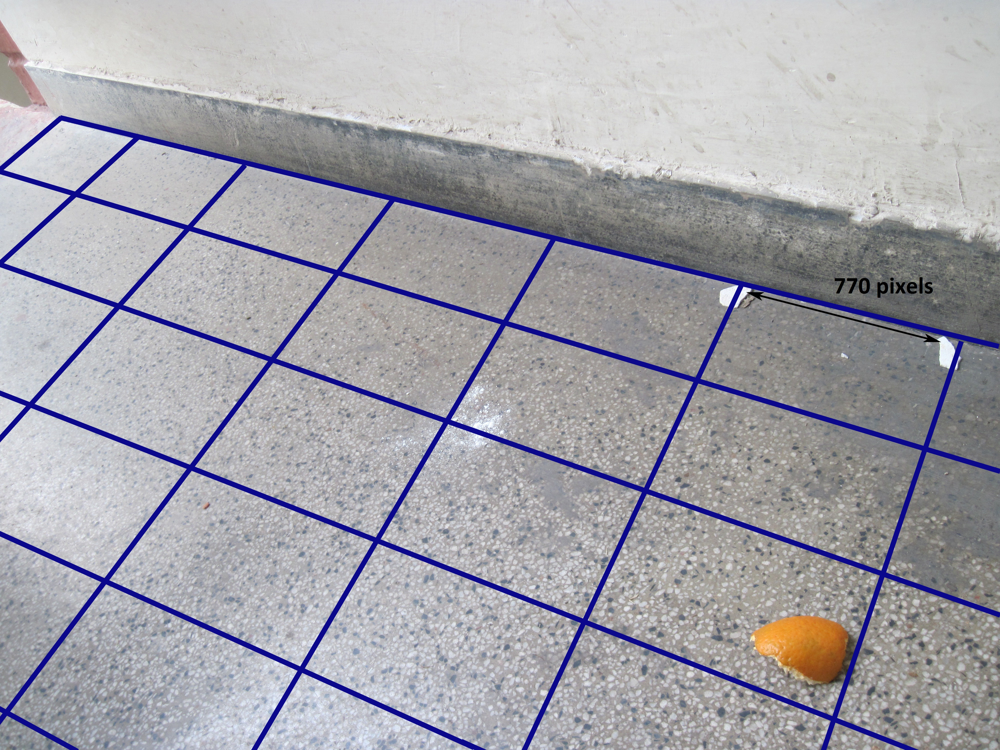

Vempati Anurag Sai Y9645
| BOT-A | BOT-B | BOT-C |
|---|---|---|
Starting point: (3,5) 0.0 0.5 0.8 0.1 0.1 0.1 0.0 0.5 0.5 0.5 0.3 0.5 0.4 0.3 [0.2] 0.3 0.1 0.7 0.8 0.2 0.0 0.0 0.2 0.8 0.3 0.0 0.0 0.0 0.5 0.1 0.0 0.0 0.0 0.5 0.1 0.0 0.0 0.0 0.2 0.0 S 0.2 D 0.2 S 0.4 L 0.4 S 1.2 0.0 0.5 0.8 0.1 0.1 0.1 0.0 0.5 0.5 0.5 0.3 0.5 0.4 0.3 0.0 0.3 0.1 0.7 [0.0] 0.0 0.0 0.0 0.2 0.8 0.3 0.0 0.0 0.0 0.5 0.1 0.0 0.0 0.0 0.5 0.1 0.0 0.0 0.0 0.2 0.0 L 1.2 S 1.9 L 1.9 S 2.0 R 2.0 0.0 0.5 0.8 0.1 0.1 0.1 0.0 0.5 0.5 0.5 0.3 0.5 0.4 0.3 0.0 0.3 0.0 [0.0] 0.0 0.0 0.0 0.0 0.2 0.8 0.3 0.0 0.0 0.0 0.5 0.1 0.0 0.0 0.0 0.5 0.1 0.0 0.0 0.0 0.2 0.0 U 2.0 S 2.4 R 2.4 S 2.7 R 2.7 0.0 0.5 0.8 0.1 0.1 0.1 0.0 0.5 0.5 0.5 0.3 0.5 0.0 0.0 [0.0] 0.3 0.0 0.0 0.0 0.0 0.0 0.0 0.2 0.8 0.3 0.0 0.0 0.0 0.5 0.1 0.0 0.0 0.0 0.5 0.1 0.0 0.0 0.0 0.2 0.0 U 2.7 S 3.2 L 3.2 S 3.7 D 3.7 0.0 0.5 0.8 0.1 0.1 0.1 0.0 0.5 0.0 0.0 0.3 0.5 0.0 [0.0] 0.0 0.3 0.0 0.0 0.0 0.0 0.0 0.0 0.2 0.8 0.3 0.0 0.0 0.0 0.5 0.1 0.0 0.0 0.0 0.5 0.1 0.0 0.0 0.0 0.2 0.0 U 3.7 D 3.7 U 3.7 U 3.7 S 3.8 0.0 0.5 0.8 [0.0] 0.1 0.1 0.0 0.5 0.0 0.0 0.3 0.5 0.0 0.0 0.0 0.3 0.0 0.0 0.0 0.0 0.0 0.0 0.2 0.8 0.3 0.0 0.0 0.0 0.5 0.1 0.0 0.0 0.0 0.5 0.1 0.0 0.0 0.0 0.2 0.0 R 3.8 S 3.9 D 3.9 L 3.9 U 3.9 Number of moves - 30 Performance - 3.9 |
Starting point: (3,5) 0.0 0.5 0.8 0.1 0.1 0.1 0.0 0.5 0.5 0.5 0.3 0.5 0.4 0.3 [0.2] 0.3 0.1 0.7 0.8 0.2 0.0 0.0 0.2 0.8 0.3 0.0 0.0 0.0 0.5 0.1 0.0 0.0 0.0 0.5 0.1 0.0 0.0 0.0 0.2 0.0 S 0.2 U 0.2 S 0.7 L 0.7 S 1.2 0.0 0.5 0.8 0.1 0.1 0.1 0.0 0.5 [0.0] 0.0 0.3 0.5 0.4 0.3 0.0 0.3 0.1 0.7 0.8 0.2 0.0 0.0 0.2 0.8 0.3 0.0 0.0 0.0 0.5 0.1 0.0 0.0 0.0 0.5 0.1 0.0 0.0 0.0 0.2 0.0 L 1.2 S 1.7 U 1.7 S 2.5 L 2.5 0.0 [0.5] 0.0 0.1 0.1 0.1 0.0 0.0 0.0 0.0 0.3 0.5 0.4 0.3 0.0 0.3 0.1 0.7 0.8 0.2 0.0 0.0 0.2 0.8 0.3 0.0 0.0 0.0 0.5 0.1 0.0 0.0 0.0 0.5 0.1 0.0 0.0 0.0 0.2 0.0 S 3.0 D 3.0 D 3.0 S 3.5 R 3.5 0.0 0.0 0.0 0.1 0.1 0.1 0.0 0.0 0.0 0.0 0.3 0.0 [0.4] 0.3 0.0 0.3 0.1 0.7 0.8 0.2 0.0 0.0 0.2 0.8 0.3 0.0 0.0 0.0 0.5 0.1 0.0 0.0 0.0 0.5 0.1 0.0 0.0 0.0 0.2 0.0 S 3.9 D 3.9 S 4.6 R 4.6 S 5.4 0.0 0.0 0.0 0.1 0.1 0.1 0.0 0.0 0.0 0.0 0.3 0.0 0.0 0.3 0.0 0.3 0.1 0.0 [0.0] 0.2 0.0 0.0 0.2 0.8 0.3 0.0 0.0 0.0 0.5 0.1 0.0 0.0 0.0 0.5 0.1 0.0 0.0 0.0 0.2 0.0 D 5.4 S 6.2 D 6.2 S 6.7 D 6.7 0.0 0.0 0.0 0.1 0.1 0.1 0.0 0.0 0.0 0.0 0.3 0.0 0.0 0.3 0.0 0.3 0.1 0.0 0.0 0.2 0.0 0.0 0.2 0.0 0.3 0.0 0.0 0.0 0.0 0.1 0.0 0.0 0.0 [0.5] 0.1 0.0 0.0 0.0 0.2 0.0 S 7.2 D 7.2 S 7.4 L 7.4 L 7.4 Number of moves - 30 Performance - 7.4 |
Starting point: (3,5) 0.0 0.5 0.8 0.1 0.1 0.1 0.0 0.5 0.5 0.5 0.3 0.5 0.4 0.3 [0.2] 0.3 0.1 0.7 0.8 0.2 0.0 0.0 0.2 0.8 0.3 0.0 0.0 0.0 0.5 0.1 0.0 0.0 0.0 0.5 0.1 0.0 0.0 0.0 0.2 0.0 S 0.2 U 0.2 S 0.7 L 0.7 S 1.2 0.0 0.5 0.8 0.1 0.1 0.1 0.0 0.5 [0.0] 0.0 0.3 0.5 0.4 0.3 0.0 0.3 0.1 0.7 0.8 0.2 0.0 0.0 0.2 0.8 0.3 0.0 0.0 0.0 0.5 0.1 0.0 0.0 0.0 0.5 0.1 0.0 0.0 0.0 0.2 0.0 L 1.2 S 1.7 U 1.7 S 2.5 L 2.5 0.0 [0.5] 0.0 0.1 0.1 0.1 0.0 0.0 0.0 0.0 0.3 0.5 0.4 0.3 0.0 0.3 0.1 0.7 0.8 0.2 0.0 0.0 0.2 0.8 0.3 0.0 0.0 0.0 0.5 0.1 0.0 0.0 0.0 0.5 0.1 0.0 0.0 0.0 0.2 0.0 S 3.0 L 3.0 D 3.0 S 3.1 D 3.1 0.0 0.0 0.0 0.1 0.1 0.0 0.0 0.0 0.0 0.0 [0.3] 0.5 0.4 0.3 0.0 0.3 0.1 0.7 0.8 0.2 0.0 0.0 0.2 0.8 0.3 0.0 0.0 0.0 0.5 0.1 0.0 0.0 0.0 0.5 0.1 0.0 0.0 0.0 0.2 0.0 S 3.4 R 3.4 S 3.9 R 3.9 S 4.3 0.0 0.0 0.0 0.1 0.1 0.0 0.0 0.0 0.0 0.0 0.0 0.0 [0.0] 0.3 0.0 0.3 0.1 0.7 0.8 0.2 0.0 0.0 0.2 0.8 0.3 0.0 0.0 0.0 0.5 0.1 0.0 0.0 0.0 0.5 0.1 0.0 0.0 0.0 0.2 0.0 D 4.3 S 5.0 R 5.0 S 5.8 D 5.8 0.0 0.0 0.0 0.1 0.1 0.0 0.0 0.0 0.0 0.0 0.0 0.0 0.0 0.3 0.0 0.3 0.1 0.0 0.0 0.2 0.0 0.0 0.2 [0.8] 0.3 0.0 0.0 0.0 0.5 0.1 0.0 0.0 0.0 0.5 0.1 0.0 0.0 0.0 0.2 0.0 S 6.6 D 6.6 S 7.1 D 7.1 S 7.6 Number of moves - 30 Performance - 7.6 |
| A | B | C |
|---|---|---|
Starting point: (7,1) 0.0 0.5 0.8 0.1 0.1 0.1 0.0 0.5 0.5 0.5 0.3 0.5 0.4 0.3 0.2 0.3 0.1 0.7 0.8 0.2 0.0 0.0 0.2 0.8 0.3 0.0 0.0 0.0 0.5 0.1 [0.0] 0.0 0.0 0.5 0.1 0.0 0.0 0.0 0.2 0.0 D 0.0 R 0.0 L 0.0 U 0.0 D 0.0 0.0 0.5 0.8 0.1 0.1 0.1 0.0 0.5 0.5 0.5 0.3 0.5 0.4 0.3 0.2 0.3 0.1 0.7 0.8 0.2 0.0 0.0 0.2 0.8 0.3 0.0 0.0 0.0 0.5 0.1 0.0 0.0 0.0 0.5 0.1 [0.0] 0.0 0.0 0.2 0.0 R 0.0 R 0.0 U 0.0 D 0.0 R 0.0 0.0 0.5 0.8 0.1 0.1 0.1 0.0 0.5 0.5 0.5 0.3 0.5 0.4 0.3 0.2 0.3 0.1 0.7 0.8 0.2 0.0 0.0 0.2 0.8 0.3 0.0 0.0 0.0 0.5 0.1 0.0 0.0 0.0 0.5 0.1 0.0 0.0 0.0 [0.2] 0.0 S 0.2 L 0.2 R 0.2 L 0.2 U 0.2 0.0 0.5 0.8 0.1 0.1 0.1 0.0 0.5 0.5 0.5 0.3 0.5 0.4 0.3 0.2 0.3 0.1 0.7 0.8 0.2 0.0 0.0 0.2 0.8 0.3 0.0 0.0 0.0 0.5 0.1 0.0 0.0 [0.0] 0.5 0.1 0.0 0.0 0.0 0.0 0.0 D 0.2 U 0.2 D 0.2 L 0.2 U 0.2 0.0 0.5 0.8 0.1 0.1 0.1 0.0 0.5 0.5 0.5 0.3 0.5 0.4 0.3 0.2 0.3 0.1 0.7 0.8 0.2 0.0 0.0 0.2 0.8 0.3 0.0 0.0 0.0 0.5 0.1 0.0 [0.0] 0.0 0.5 0.1 0.0 0.0 0.0 0.0 0.0 U 0.2 U 0.2 D 0.2 L 0.2 R 0.2 0.0 0.5 0.8 0.1 0.1 0.1 0.0 0.5 0.5 0.5 0.3 0.5 0.4 0.3 0.2 0.3 0.1 0.7 0.8 0.2 0.0 0.0 0.2 0.8 0.3 0.0 [0.0] 0.0 0.5 0.1 0.0 0.0 0.0 0.5 0.1 0.0 0.0 0.0 0.0 0.0 L 0.2 U 0.2 D 0.2 R 0.2 L 0.2 Number of moves - 30 Performance - 0.2 |
Starting point: (7,1) 0.0 0.5 0.8 0.1 0.1 0.1 0.0 0.5 0.5 0.5 0.3 0.5 0.4 0.3 0.2 0.3 0.1 0.7 0.8 0.2 0.0 0.0 0.2 0.8 0.3 0.0 0.0 0.0 0.5 0.1 [0.0] 0.0 0.0 0.5 0.1 0.0 0.0 0.0 0.2 0.0 D 0.0 U 0.0 U 0.0 U 0.0 U 0.0 0.0 0.5 0.8 0.1 0.1 0.1 0.0 0.5 0.5 0.5 0.3 0.5 0.4 0.3 0.2 [0.3] 0.1 0.7 0.8 0.2 0.0 0.0 0.2 0.8 0.3 0.0 0.0 0.0 0.5 0.1 0.0 0.0 0.0 0.5 0.1 0.0 0.0 0.0 0.2 0.0 S 0.3 U 0.3 S 0.6 R 0.6 S 1.1 0.0 0.5 0.8 0.1 0.1 0.1 0.0 0.5 0.5 0.5 0.0 [0.0] 0.4 0.3 0.2 0.0 0.1 0.7 0.8 0.2 0.0 0.0 0.2 0.8 0.3 0.0 0.0 0.0 0.5 0.1 0.0 0.0 0.0 0.5 0.1 0.0 0.0 0.0 0.2 0.0 R 1.1 S 1.5 D 1.5 S 2.2 R 2.2 0.0 0.5 0.8 0.1 0.1 0.1 0.0 0.5 0.5 0.5 0.0 0.0 0.0 0.3 0.2 0.0 0.1 0.0 [0.8] 0.2 0.0 0.0 0.2 0.8 0.3 0.0 0.0 0.0 0.5 0.1 0.0 0.0 0.0 0.5 0.1 0.0 0.0 0.0 0.2 0.0 S 3.0 D 3.0 S 3.8 D 3.8 S 4.3 0.0 0.5 0.8 0.1 0.1 0.1 0.0 0.5 0.5 0.5 0.0 0.0 0.0 0.3 0.2 0.0 0.1 0.0 0.0 0.2 0.0 0.0 0.2 0.0 0.3 0.0 0.0 0.0 [0.0] 0.1 0.0 0.0 0.0 0.5 0.1 0.0 0.0 0.0 0.2 0.0 D 4.3 S 4.8 D 4.8 S 5.0 U 5.0 0.0 0.5 0.8 0.1 0.1 0.1 0.0 0.5 0.5 0.5 0.0 0.0 0.0 0.3 0.2 0.0 0.1 0.0 0.0 0.2 0.0 0.0 0.2 0.0 0.3 0.0 0.0 0.0 0.0 0.1 0.0 0.0 0.0 [0.0] 0.1 0.0 0.0 0.0 0.0 0.0 R 5.0 S 5.1 U 5.1 S 5.2 U 5.2 Number of moves - 30 Performance - 5.2 |
Starting point: (7,1) 0.0 0.5 0.8 0.1 0.1 0.1 0.0 0.5 0.5 0.5 0.3 0.5 0.4 0.3 0.2 0.3 0.1 0.7 0.8 0.2 0.0 0.0 0.2 0.8 0.3 0.0 0.0 0.0 0.5 0.1 [0.0] 0.0 0.0 0.5 0.1 0.0 0.0 0.0 0.2 0.0 R 0.0 R 0.0 R 0.0 S 0.5 U 0.5 0.0 0.5 0.8 0.1 0.1 0.1 0.0 0.5 0.5 0.5 0.3 0.5 0.4 0.3 0.2 0.3 0.1 0.7 0.8 0.2 0.0 0.0 0.2 0.8 0.3 0.0 0.0 0.0 [0.5] 0.1 0.0 0.0 0.0 0.0 0.1 0.0 0.0 0.0 0.2 0.0 S 1.0 U 1.0 S 1.8 U 1.8 S 2.6 0.0 0.5 0.8 0.1 0.1 0.1 0.0 0.5 0.5 0.5 0.3 0.5 0.4 0.3 0.2 0.3 0.1 0.7 [0.0] 0.2 0.0 0.0 0.2 0.0 0.3 0.0 0.0 0.0 0.0 0.1 0.0 0.0 0.0 0.0 0.1 0.0 0.0 0.0 0.2 0.0 L 2.6 S 3.3 U 3.3 S 3.7 U 3.7 0.0 0.5 0.8 0.1 0.1 0.1 0.0 [0.5] 0.5 0.5 0.3 0.5 0.0 0.3 0.2 0.3 0.1 0.0 0.0 0.2 0.0 0.0 0.2 0.0 0.3 0.0 0.0 0.0 0.0 0.1 0.0 0.0 0.0 0.0 0.1 0.0 0.0 0.0 0.2 0.0 S 4.2 U 4.2 S 5.0 L 5.0 S 5.5 0.0 [0.0] 0.0 0.1 0.1 0.1 0.0 0.0 0.5 0.5 0.3 0.5 0.0 0.3 0.2 0.3 0.1 0.0 0.0 0.2 0.0 0.0 0.2 0.0 0.3 0.0 0.0 0.0 0.0 0.1 0.0 0.0 0.0 0.0 0.1 0.0 0.0 0.0 0.2 0.0 R 5.5 R 5.5 S 5.6 D 5.6 S 6.1 0.0 0.0 0.0 0.0 0.1 0.1 0.0 0.0 [0.0] 0.5 0.3 0.5 0.0 0.3 0.2 0.3 0.1 0.0 0.0 0.2 0.0 0.0 0.2 0.0 0.3 0.0 0.0 0.0 0.0 0.1 0.0 0.0 0.0 0.0 0.1 0.0 0.0 0.0 0.2 0.0 R 6.1 S 6.6 D 6.6 S 6.8 L 6.8 Number of moves - 30 Performance - 6.8 |
0 0.5 0.8 0.1 0.1 0.1 0 0.5 0.5 0.5 0.3 0.5 0.4 0.3 0.2 0.3 0 0 0.8 0.2 0 0 0 0 0.3 0 0 0 0 0.1 0 0 0 0 0.1 0 0 0 0.2 0In the above environment, if the randomized agent starts at (8,1) it has high chances of remaining in the region of zeros for a long time. Moving in circles can seriously degrade it's performance. D. We can find a distribution of real data given sensor data from previous readings(huge collection). We can device a probabilistic approach based on that to estimate what could be the actual dirt value given the value we sense. E. This problem can be overcome by assigning some value of dirt equal to the expected dirt to every location previously visited after each move it makes from then. E(Dirt) = sigma(dirt*N(20,10)).
D. Once the robot is able to draw the grid in it's memory, it can easily get the location of the dirt from the image.

Figure - 1
In this figure two markers are placed at arbitrary positions on the edge. They are sepeerated by a distance of 770 pixels.
Figure - 2
In this figure the same two markers are seperated by a distance of 820 pixels(farthest). The line joining them is seen in it's real length, since
we are viewing in a direction normal to one of the planes containing it.